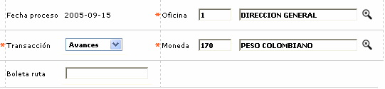
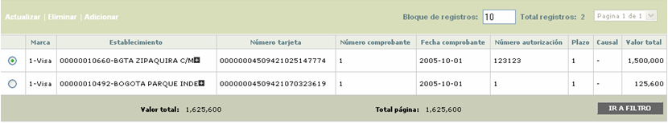
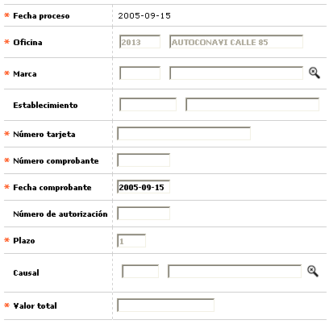
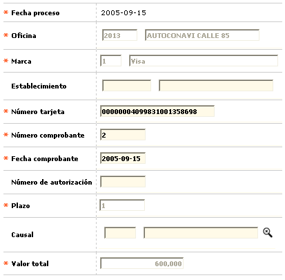

Captura movimiento oficinas
Mediante esta opción se permite a la entidad la captura o ingreso del movimiento hecho con tarjetas débito por sus clientes directamente en las sucursales y correspondiente a transacciones de avances e impuestos.
Al ingresar al formulario se despliega un filtro en el cual el usuario debe digitar la información de la oficina para la que se va a capturar el movimiento, la transcción a ingresar y la moneda.

Descripción de campos
Fecha proceso |
Campo de salida en formato YYYY-MM-DD que contiene la fecha de proceso actual y para la que se va a capturar el movimiento. El sistema no permite el ingreso de transacciones para fechas anteriores. |
Oficina |
En este campo obligatorio con lista de valores se selecciona la oficina para la que se va a consultar y/o ingresar movimiento manual. |
Transacción |
Campo obligatorio tipo combo en el que se selecciona entre Avance o Impuestos el tipo de transacción a consultar y/o capturar. |
Moneda |
En este campo obligatorio con lista de valores, se selecciona la Moneda en la que están denominadas las transacciones manuales a ingresar en el sistema |
Boleta de ruta |
Campo no obligatorio en el que se puede registrar el número de la boleta de ruta asignada a la sucursal para la que se desea consultar y/o ingresar movimiento manual. |
Una vez seleccionados los criterios y mediante el botón buscar, se despliegan en el formulario los registros de las transacciones de avances o impuestos capturadas para esa oficina en la fecha de proceso actual. Si no existe movimiento ingresado el formulario se muestra en blanco.
Es importante aclarar que el sistema no permite mezclar los avances y los impuestos por lo cual antes de poder ingresar cualquiera de estos tipos de transacción es necesario diligenciar el filtro seleccionando el tipo de transacción requerido.

El formulario contiene los enlaces: Actualizar,Eliminar y Adicionar.
Adicionar: Al activar ese enlace se despliega un nuevo formulario con los siguientes campos para permitir el ingreso de las transacciones tanto de Avances como de Pagos de impuestos.

Descripción de campos
Fecha proceso |
Campo de salida en formato YYYY-MM-DD que contiene la fecha de proceso actual y para la que se va a capturar el movimiento. El sistema no permite el ingreso de transacciones para fechas anteriores. |
Oficina |
En este campo de salida se muestra la oficina para la que se está ingresando el movimiento de acuerdo con la información seleccioanda en el filtro inicial. |
Marca |
Campo obligatorio con lista de valores del que se selecciona la marca a la que pertenece la tarjeta débito para la que se va a capturar la transacción de avances o impuestos. |
Establecimiento |
En este campo alfanumérico de 11 dígitos, no obligatorio, se registra el código único que identifica, ante la franquicia, al establecimiento donde se realiza la transacción. |
Número tarjeta |
Campo alfanumérico de 23 dígitos, obligatorio, en el que se digita el número de la tarjeta débito mediante la cual se realizó la transacción de Avance o Pago de impuestos y que es validada por el sistema para verificar su existencia. |
Número comprobante |
En este campo numérico de 7 dígitos, obligatorio, se registra el número del voucher o comprobante correspondiente a la transacción de Avance o Impuesto efectuada por el cliente. |
Fecha comprobante |
Campo obligatorio en formato YYYY-MM-DD que por defecto muestra la misma fecha actual de proceso pero que es editable y permite el ingreso de la fecha correspondiente a la transacción. |
Número de autorización |
En este campo alfanumérico de 6 dígitos, no obligatorio, en el que se registra el número de autorización otorgado para el Avance o Pago de impuesto. |
Plazo |
Campo de salida que siempre esta en 1, ya que todas las transaccion de tarjeta debito son debitadas en su totalidad de la cuenta. |
Causal |
Si durante el proceso de la captura del comprobante el usuario detecta inconsistencias en los comprobantes, tales como falta de firma, falta de sellos, documento no legible, entre otras posibles alteraciones, mediante la lista de valores adjunta puede seleccionar la Causal de rechazo de transacciones por la cual el movimiento va a ser enviado a pendientes o fraudes. |
Total |
Campo numérico obligatorio de hasta 14 enteros y 2 decimales en el que se registra el valor total de la transacción de Avance o Pago de impuestos efectuada por el cliente con su tarjeta débito. |
Actualizar: si el usuario selecciona un registro e invoca la opción Actualizar se despliega un formulario en el cual los campos NO modificables son Fecha proceso, Oficina, Marca, Plazo y Valor total.
